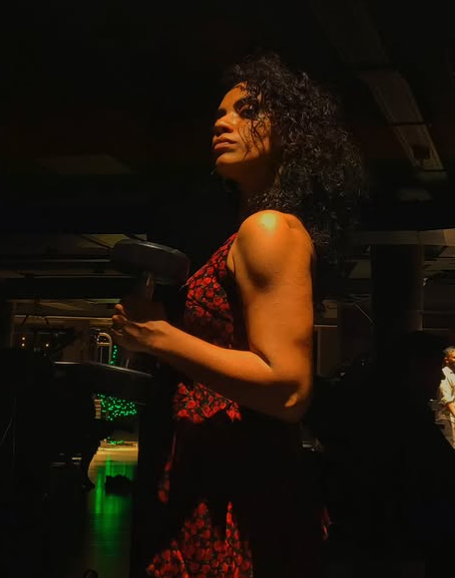

Aiswarya Rose
Writer, Marketer, Full Stack Developer

Contact:
Ph: +91-9497042793
e-mail: aiswaryarose11@gmail.com
Work Experience
-
Content Marketer, Go2Andaman.com, Bengaluru
March 2023 - June 2023
- Improved SEO for the Go2Andaman site, resulting in a 30% average increase in monthly organic visitors to different pages
- Monitored growth, ad campaigns and ferry ticket sales over three months
- Designed, edited and improved the readability of several onsite landing pages and special edition traveller guides issued by Go2Andaman
-
Content Writer & Digital Marketing Associate, Travelopia, Bengaluru
April 2022 - February 2023
- Undertook employer branding and curated employee stories for LinkedIn
- Produced 8+ organisation wide IT newsletters and worked with several teams including IT, HR and Marketing
- Edited and produced 3+ videos showcasing stories of several brands within the Travelopia family
- Published 2 travel blogs for Hayes & Jarvis, a Travelopia brand
-
Performance Marketing Intern, The Starter Labs, Mumbai
January 2022 - March 2022
- Handled periodic reporting, post promotions and optimisations for 6+ brands including Root Naturals, Yaan Man and TAG
- Undertook the responsibility of market analysis, budget and media planning for two brands: TAG Beer and Root Naturals, during February
- Coordinated with organisations like Femina, Grazia, Media Donuts to better implement programmatic and native advertising efforts
- Improved Google Display conversion rates for a beauty brand, from 3 to 18 along with a team of four within the span of two months
-
Social Media Intern, Traveller's University, Online
September 2021 - March 2022
- Designed and developed social media content in several formats, for multiple social media handles including Facebook, Instagram, Twitter
- Edited, published and curated SEO optimized blog posts using experiences documented by 52 Parindey Fellowship participants
-
Digital Marketing Intern, Ask Avi Arya, Online
February 2021 - April 2021
- Designed 6+ bi-weekly/monthly social media calendars for Instagram content, meeting the target of 1k+ reach on all assignments
- Crafted newsletters & blog posts on subjects like SEO, affiliate, event and content marketing to increase website traffic & email open rates
-
Freelance Content Writer, Upwork, Online
Sep 2020 - January 2021
- Published 7+ articles on commercial blogs/websites for multiple clients on various topics ranging from agriculture to animal husbandry
Education
-
The Marketing Launchpad, Kraftshala, Online
September 2021 - March 2022
- Strategized an integrated campaign across Facebook and Google for McDonald's, with a budget of 40 million INR for a duration of 2 months.
The plan included a selection of platforms, campaign objectives, buying types, audiences, adsets and creatives.
- SEO Projects: Worked on On-page, Off-page and Tech SEO audits, keyword research and On & Off-page Audits / Backlinking.
-
MA Spanish (Hispanic Studies), The English and Foreign Languages University, Hyderabad
August 2019 - June 2021
-
BA English (Honours), The English and Foreign Languages University, Hyderabad
August 2015 - December 2018
-
Advanced Diploma of Proficiency in Spanish, The English and Foreign Languages University, Hyderabad
August 2015 - December 2018
-
Class 12 (ISC) Humanities and Computer Science, Hari Sri Vidya Nidhi School, Thrissur, Kerala
Jun 2013 - Apr 2015
-
Class 10 (ICSE), Hari Sri Vidya Nidhi School, Thrissur, Kerala
Jun 2003 - Apr 2013
Achievements
-
Annual All India Essay Writing Event, SRCM, United Nations Information Centre for India & Bhutan
February 2013 - March 2013
- Achieved 1st position at district level (Thrissur)
-
University Volleyball and Football Teams, EFL University, Hyderabad
August 2015 - December 2018
- Participated and won accolades in 7 intra-university tournaments and was commended for exceptional team management skills
Skills
- Content Creation & Strategy
- Content Marketing
- Search Engine Optimisation
- Web Design